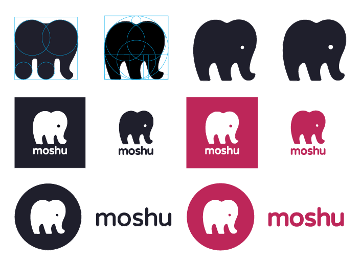
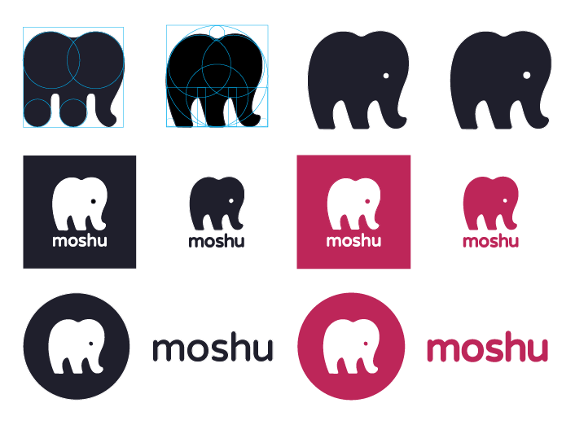

97% of users want to see a preview of the item
75% want tracking info on progress & shipping
71% value customer reviews and photos
 Next, with a bit of mind-mapping and experimenting with animals and fantastical creatures, I designed the logo as seen below:

Next, with a bit of mind-mapping and experimenting with animals and fantastical creatures, I designed the logo as seen below:



Browse and learn about the product
Create your custom plush toy
Purchase and track your order